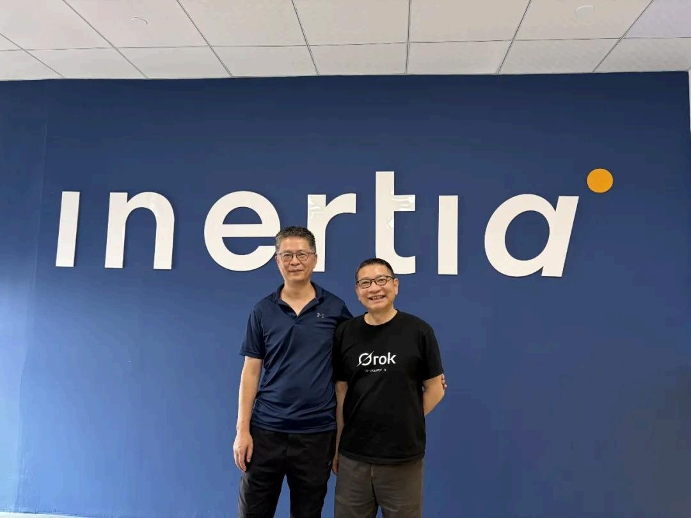
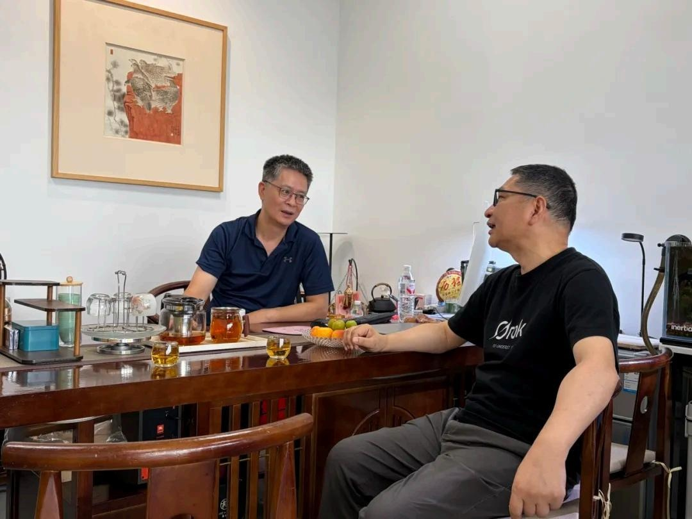
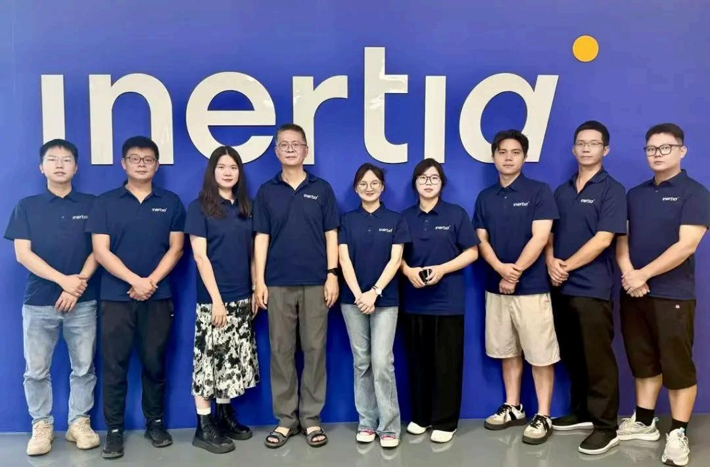
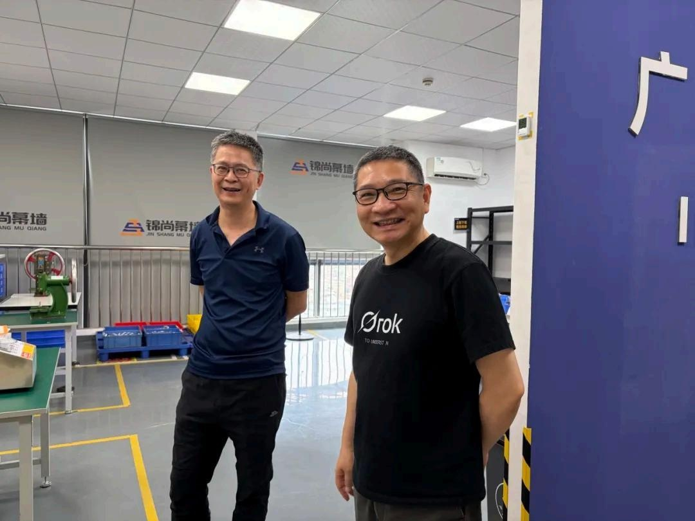
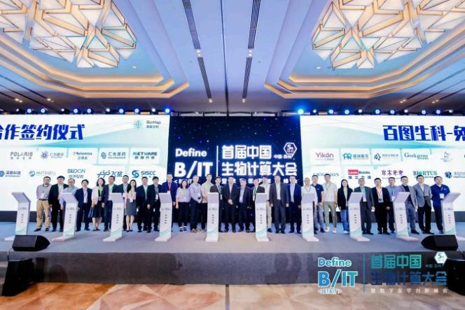
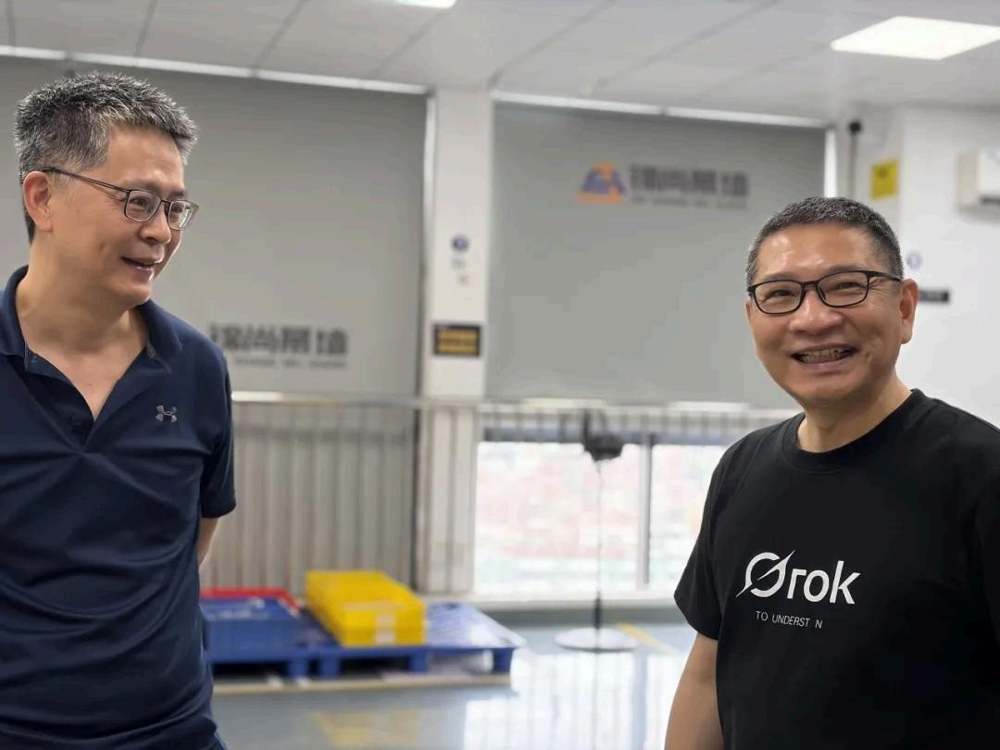

对于制造业合作而言,客户的每一次到访都意义非凡——它意味着对方愿意花时间走进你的车间、了解你的团队、评估你的体系。迈理奥郑总的到来,是对广州易纳制造实力与合作诚意的直接认可。

技术是合作的桥梁,信任是同行的基石。近日,迈理奥郑总一行到访广州易纳,两家公司团队齐聚一堂,围绕技术能力、产品制造与长期合作展开深入交流,共同见证一段以技术为桥、以信任同行的伙伴关系。
Part 1 会议桌前:坦诚的技术对话
交流从会议室开始。双方团队就产品技术状态、制造工艺、交付周期与质量保障等议题进行了坦诚沟通。技术合作的关键不在于"承诺了什么",而在于"如何兑现"——广州易纳团队以具体的工艺方案、检验节点与项目管理机制,回应了客户对交付可靠性的关切。
中加双岸的协作模式在此刻显现价值:多伦多的研发视角与广州的制造视角在同一张会议桌上汇合,让技术问题的讨论既懂设计意图,也懂产线现实。


Part 2 走进车间:信任,在现场建立
会议之外,郑总一行走进生产车间,实地了解广州易纳的制造现场。从产线布局到检验环节,从物料管理到产品追溯,每一处细节都是对"质量承诺"的直观诠释。
在 ISO 13485:2016 质量管理体系规范下运行的车间,给来访团队留下了深刻印象:规范、有序、可追溯——这正是客户愿意把项目托付给一家制造伙伴的理由。


Part 3 镜头内外:同行,是长期主义的答案
交流接近尾声,两家公司的团队留下了一张又一张合影——在 logo 前、在车间里、在会议室旁。镜头定格的不仅是当天的到访,更是一段合作关系从"接触"走向"信任"的过程。
制造业没有捷径。可靠的交付来自日复一日的体系运转,稳固的合作来自一次次坦诚的交流。迈理奥郑总的这次到访,让"以技术为桥,以信任同行"从一句愿景,变成了两家公司正在共同书写的现实。

Capabilities 本次到访验证的易纳能力
- 客户到访接待与开放沟通:以透明、坦诚的方式向客户展示车间、体系与团队
- ISO 13485:2016 合规制造现场:规范、有序、可追溯的生产环境
- 中加双岸技术视角:研发与制造在同一张桌上协同,减少技术决策偏差
- 长期合作导向:以体系化交付与持续沟通构建客户信任
技术是桥梁,信任是同行者的路。 感谢迈理奥郑总一行的到访,期待两家公司在产品制造之路上并肩前行,走得更远。